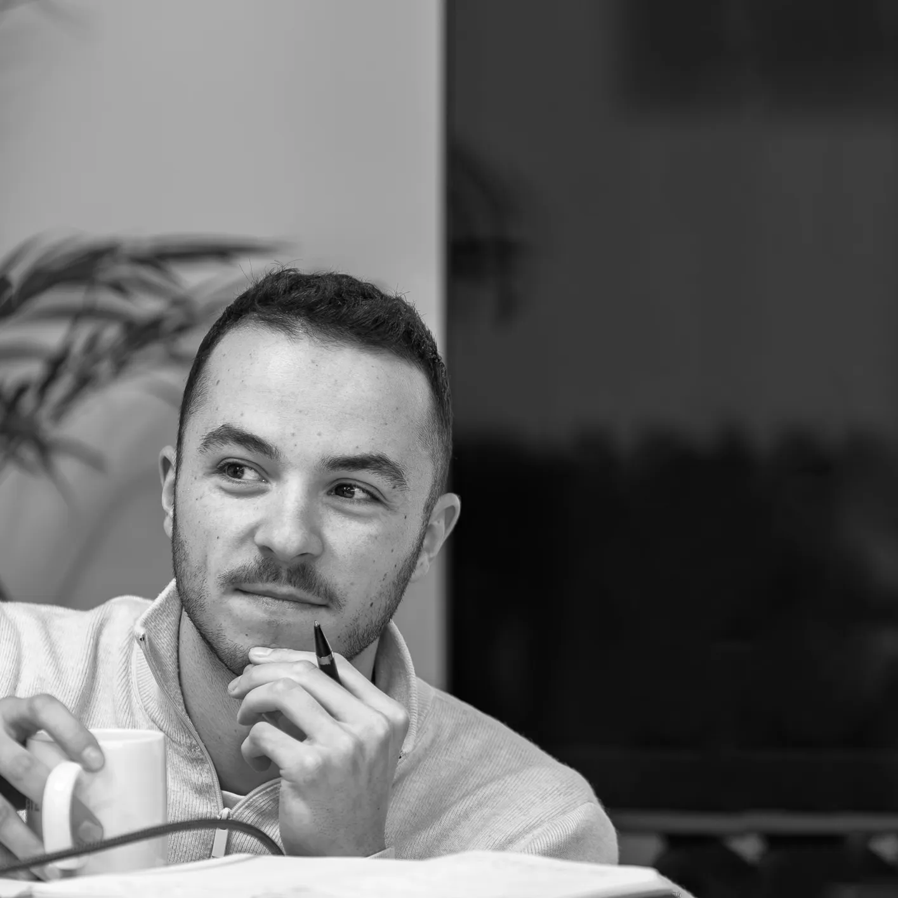

Chaque projet résout un problème différent

Spécialisé dans la rénovation, la conception et l'aménagement de vos espaces de vie et de travail, j'accompagne particuliers et professionnels dans la conception d'espaces haut de gamme, entièrement pensés sur mesure.
Installé à Redon, j'interviens plus largement dans le Morbihan et Loire-Atlantique notamment Vannes, Sarzeau, Muzillac, Guérande et Saint-Nazaire.
Mon rôle est de transformer une idée en un projet clair, structuré et maîtrisé, de la première esquisse jusqu'à la livraison finale. Pour que le résultat soit exactement celui que vous avez validé : un espace fonctionnel, fluide et pensé dans les moindres détails.
5 étapes pour transformer une idée floue en évidence

Lors de ce premier rendez-vous sur place, nous prenons le temps d’observer et de comprendre vos espaces : circulation, lumière, usage des pièces, contraintes techniques, potentiel esthétique…
Cette première rencontre nous permet de vérifier ensemble la faisabilité du projet, d’envisager les premières pistes d’aménagement selon vos envies et besoins et de définir une enveloppe budgétaire et un planning.

Je conçois pour vous un projet concret et personnalisé : plans d’aménagement optimisés, agencement structuré, vues 3D réalistes, vidéos immersives ... vous permettant de vous projeter dans votre futur espace avant même le début des travaux.
Chaque choix est pensé pour trouver l’équilibre entre esthétique, fonctionnalité et budget. Cette étape permet de figer les grandes orientations du projet, d’anticiper chaque détail et d’éviter les mauvaises surprises.

Je prends en charge les déclarations administratives nécessaires et vous guide dans les obligations réglementaires : déclaration préalable de travaux, permis de construire, demandes liées à la mise en conformité des ERP, réglementations de sécurité et d’accessibilité.
Je rédige l’ensemble des documents nécessaires : notices, plans, pièces administratives… afin de constituer un dossier clair, sécurisé et complet pour le dépôt.

Je sélectionne et vous présente les échantillons matériaux afin que vous puissiez voir, toucher, valider et ressentir l’ambiance complète du projet.
En collaboration avec des marques de qualité et haut de gamme, j'ai la possibilité de coordonner les achats et prendre en charge l'ensemble des commandes : mobilier, luminaires et accessoires décoratifs.
Je vous présente plusieurs références adaptées à votre projet en privilégiant la qualité, la durabilité et l'harmonie. Tout est livré directement chez vous, prêt à être installé et vécu.

Pour donner vie au projet, je vous mets en relation avec une équipe d'artisans locaux garantissant une réalisation conforme et dans les délais.
J’organise et supervise la préparation et le déroulement du chantier : analyse des devis avec optimisation budgétaire, planning d’exécution, réunions de chantier régulières et comptes rendus précis.
Chaque élément est coordonné pour garantir une exécution fluide et fidèle au projet initial imaginé ensemble.
Lors de ce premier rendez-vous sur place, nous prenons le temps d’observer et de comprendre vos espaces : circulation, lumière, usage des pièces, contraintes techniques, potentiel esthétique…
Cette première rencontre nous permet de vérifier ensemble la faisabilité du projet, d’envisager les premières pistes d’aménagement selon vos envies et besoins et de définir une enveloppe budgétaire et un planning.
Je conçois pour vous un projet concret et personnalisé : plans d’aménagement optimisés, agencement structuré, vues 3D réalistes, vidéos immersives ... vous permettant de vous projeter dans votre futur espace avant même le début des travaux.
Chaque choix est pensé pour trouver l’équilibre entre esthétique, fonctionnalité et budget. Cette étape permet de figer les grandes orientations du projet, d’anticiper chaque détail et d’éviter les mauvaises surprises.
Je prends en charge les déclarations administratives nécessaires et vous guide dans les obligations réglementaires : déclaration préalable de travaux, permis de construire, demandes liées à la mise en conformité des ERP, réglementations de sécurité et d’accessibilité.
Je rédige l’ensemble des documents nécessaires : notices, plans, pièces administratives… afin de constituer un dossier clair, sécurisé et complet pour le dépôt.
Je sélectionne et vous présente les échantillons matériaux afin que vous puissiez voir, toucher, valider et ressentir l’ambiance complète du projet.
En collaboration avec des marques de qualité et haut de gamme, j'ai la possibilité de coordonner les achats et prendre en charge l'ensemble des commandes : mobilier, luminaires et accessoires décoratifs.
Je vous présente plusieurs références adaptées à votre projet en privilégiant la qualité, la durabilité et l'harmonie. Tout est livré directement chez vous, prêt à être installé et vécu.
Pour donner vie au projet, je vous mets en relation avec une équipe d'artisans locaux garantissant une réalisation conforme et dans les délais.
J’organise et supervise la préparation et le déroulement du chantier :analyse des devis avec optimisation budgétaire, planning d’exécution, réunions de chantier régulières et comptes rendus précis.
Chaque élément est coordonné pour garantir une exécution fluide et fidèle au projet initial imaginé ensemble.
Adaptées à vos besoins
Vous voulez un intérieur cohérent, abouti et qui a du caractère.
Je vous accompagne pour faire les bons choix dans la conception de votre projet.
- Plans d'aménagements optimisés
- Visuels 3d réalistes et immersifs
- Création d'une ambiance sur mesure
- Sélection des matériaux et couleurs
- Sélection de mobilier, luminaires et éléments décoratifs. Fourniture possible.
Structure de la phase travaux, sans pilotage de chantier.
Je vous accompagne sur place dans les RV artisans et la relecture des devis.
- Dessin de l'ensemble des plans détaillés
- Dossier technique complet
- Réunion pré-chantier sur place avec les artisans
- Relecture des devis et optimisation
Vous souhaitez déléguer et faire avancer votre projet sereinement
En complément de la mission conception + plans :
- Suivi des travaux
- Planning des travaux
- Coordination des intervenants
- Visites de chantier régulières
- Comptes rendus réguliers
Votre projet nécessite une autorisation administrative ?
Je constitue et dépose en mairie un dossier clair et conforme.
- Analyse des contraintes PLU
- Rédaction des plans nécessaires
- CERFA complété
- Accompagnement au dépôt en mairie
- Suivi et ajustement pour obtenir les autorisations rapidement

Nous avons fait appel à Mr Cousseau dans le cadre des démarches de notre projet locatif.
Nous sommes très satisfaits de sa prestation. Il aura été de bons conseils sur le projet, les visuels étaient très pro et nous ont permis de nous projeter facilement en terme d'aménagement et de décoration.
Il a suivi au plus près le dossier auprès du service urbanisme et à été très réactif quand il a fallu effectuer des modifications afin de faire en sorte que celui-ci aboutisse rapidement.
Je recommande vivement.

Nous avons fait appel à Alexandre pour le projet d’aménagement et de rénovation de notre maison, située sur la commune de Plescop.
Il a tout de suite compris le style que nous souhaitions et nous a proposé des plans et des visuels magnifiques, avec de très bonnes idées et conseils.
Bien que sa prestation soit terminée, il reste malgré tout à notre écoute en cas de besoin, et nous accompagne jusqu’au bout du projet. Maintenant, nous avons hâte que notre projet voie le jour.
Vous pouvez lui faire confiance les yeux fermés. Merci Alexandre !

Un grand merci à Alexandre pour son excellent travail sur notre projet de réagencement intérieur de notre maison.
Les idées d'aménagement et la qualité des visuels 3D nous ont permis de nous projeter à 100%.
Bravo et merci!